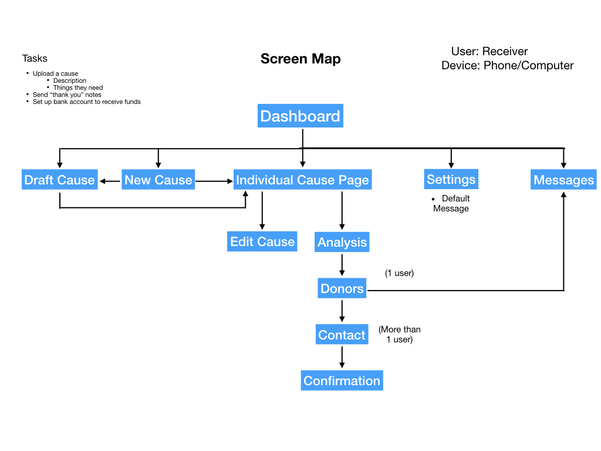
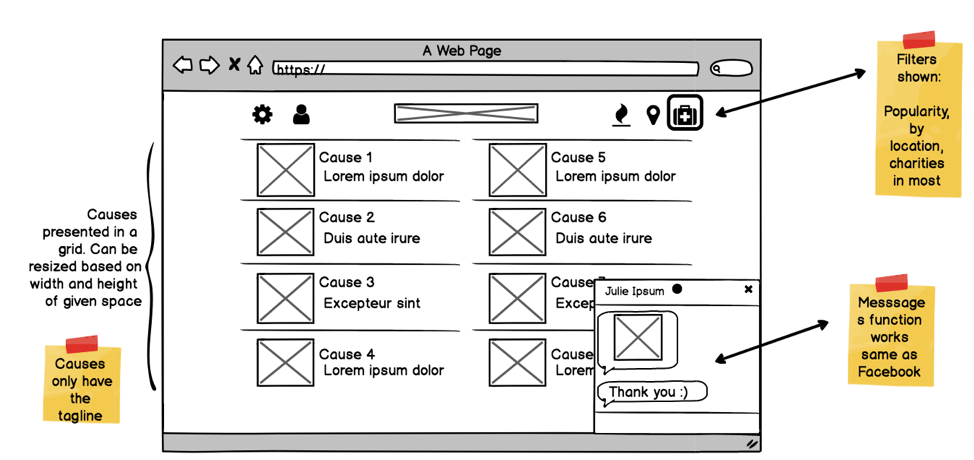

User-Centered Research & Evaluation:
OnTime
In this project, I worked on a team of 4 individuals to perform user-centered research methods and develop a design artifact to improve the transportation solutions that currently exist on CMU campus. I planned and employed various design methods as a team member, such as contextual inquiry, think-aloud protocols, affinity diagramming, stakeholder diagramming, 5-second tests, and desirability studies. I also helped in creating the design artifact, using Balsamiq & Sketch. Our solution, an application named OnTime, fulfills student's needs of having access to reliable transportation information, graphics that encourage time management skills, and the ability to express preference in their transportation methods when they go to campus in the morning.
Poster:
Write-Up:
Methodologies
Contextual Inquiry
5-Second Test
Storyboarding
Think-Aloud Protocols Text-based Diary Studies Speed Dating
Think-Aloud Protocols Text-based Diary Studies Speed Dating
Software used
As part of the course User-Centered Research & Evaluation, a course taught in the Human Computer Interaction department, we were assigned to better the transportation experience of CMU students by narrowing into a focus/problem, performing various explorational then evaluative research methods, and creating a design artifact (whether it be a physical object, high-fidelity wireframes, etc.) The problem area that was provided to us by the Graduate Student Assembly was how to improve transportation that students experience while attending CMU. After organizing previous design ideas through an effort vs. value axis, we arrived at the focus of bettering the experience of students who are habitually late to campus (with the hopes of preventing their lateness). We then chose research methods through a methods selection table (seen at right, a helpful tool in planning how to answer research questions after defining a focus) from this population of students, which could then lead to design decisions later in our process. After we had defined our focus, we performed the following explorational research methods: contextual inquiry, affinity diagramming, diary study, think-aloud protocol, and speed-dating. I will only discuss the methods that I was involved in, but I am knowledgeable of the other methods that occurred on our team.
Selected Research Methods
Background Research -
This introductory method comprised of reading news interviews with volunteers that have worked for disaster relief organizations. We found that volunteers are in need of adequate, appropriate supplies for each relief situation, and are frustrated that they can’t communicate with donors.
Guerrilla Research -
We also wanted to gain an understanding of those on the other side of the donation transaction – the donors. We reached out to individuals we knew who donated to various charitable organizations, and asked about their behaviors (how often they donated, which organizations) as well as their perspective on the donation process. Our findings included the donor’s motivations of providing the most help in a given situation, and their need of a fast & efficient donating process (for some, this meant automatically transmitting payments to certain charitable organizations).
Persona Generation -
With the previous background research, we were able to identify the needs, motivations, and general perspectives of both the donors and volunteers. This knowledge then informed our creation of two, representative personas: Taylor, a product manager at a technology company, and Marie, a volunteer working in Syrian refugee camps in Greece. We used our personas to create common understanding about our stakeholders, and later to explain our concept’s application in a story involving the two of them.
Personas:

Scenario Generation -
This methodology was meant to further explore functionalities (which correlated to a specific need, motivation, or frustration our stakeholders experienced) our solution could support, with the hopes of selecting a couple to then iterate on and find form in our final deliverable. We generated ~20 of these, which allowed us to again create common understanding of the functionality of our application, as well as explore various design opportunities.
Scenarios:
Storyboarding -
Using a context, problem, solution, and resolution breakdown, we created multiple storyboards. These storyboards allowed us to abstractly (in that the interfaces were nondescript) test various user needs in the next process of speed-dating, discussed below.
Storyboards:
Speed Dating -
With our storyboards, we were able to perform speed-dating, a key method used in discovering and testing user needs. We were able to test multiple storyboards, with each need supported with various levels of intervention (for example, one involved the automatic deduction of funds from a bank account to charitable organizations (in which we received lots of feedback from, shying us away from that form of intervention)).
Generating an Artifact:
In the midst of the research methods performed above, we were creating artifacts that gradually became less and less abstract, ending with a high-fidelity mockup of a few critical pages that expressed much of our solution’s functionality.
We utilized the process of screen mapping in order to formulate a set of navigable screens to represent what a finished product might look like. We were especially intentional in the channels in which users could travel through to various pages, emphasizing routes that would support significant user needs (such as the donation page for donors). After generating this map, we identified the screens which would best explain our solution and its salient functionality.

Volunteer-side screen map
After performing this method, we began making low-fidelity wireframes using Balsamiq. One I created is displayed below below, along with feedback & notations our team gave internally after we reviewed each of our screens, along with our design opportunities (motivated by user needs) that we knew could be implemented into our next version.

Donor home screen low visual-fidelity wireframe
Progressing into more visually tactile realms, we iterated into high-visual fidelity prototypes. We created these using Sketch, with me adding to my proficiency with this tool. In choosing a color scheme, typography, iconography, along with further interrogating our screens with the help of classmates and ourselves (searching for need-fulfillment and confusing aspects), our artifact was ready to present.
Final Artifact:

Donor home screen for final submission.
Pitch:
After completing our design artifact, we needed to present our artifact along with its function in a context. We organized our pitch in a context, problem, solution format, giving real-world examples to explain our problem (for example: someone sent a box of frisbees to a hurricane relief site) and how its peer-to-peer nature efficaciously solves problems & reflects motivations stakeholders have.
Pitch Deck:
Conclusion
As a team, we first learned to work with one another, as all of us had different backgrounds and strengths. We all worked to indicate our capabilities & tendencies, and used these to then divvy work to our strengths. With open communication when things were going well and when things were going wrong, we effectively collaborated and learned from one another through the project.
We collectively learned how to generate storyboards as well as use speed dating. Synchronizing the development of the final, hi-fi screens was awkard at times, but we eventually developed a system of editing the document, listing things we had changed & the reasons why, and notifying others of the change (kind of functioning like a git repository). We also created a style sheet to help us use the correct icons/type/color forms.
I became familiar with design methods such as guerrilla research and speed-dating. I learned how to communicate my ideas via a pitch (I performed the “context” part of our presentation), and also how to simultaneously do research and make things. I’d be happy to do a similar project in the future (having the skills I learned), and see it come to fruition.